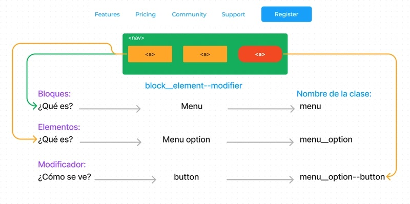

BEM, (Block), (Element), (Modifier)
La metodología BEM, que significa "Bloque, Elemento, Modificador" (en inglés, Block, Element, Modifier), es una técnica popular en el desarrollo de interfaces web y en la organización de CSS. Su objetivo principal es crear código más claro, modular y fácil de mantener, especialmente en proyectos grandes. En BEM, los bloques representan componentes independientes, los elementos son partes de esos bloques, y los modificadores indican variaciones o estados de los bloques o elementos. Por ejemplo, un bloque podría ser una tarjeta, un elemento sería el título dentro de esa tarjeta, y un modificador podría ser una versión resaltada de la tarjeta. Esta metodología ayuda a evitar conflictos en los estilos, facilita la reutilización de componentes y mejora la colaboración en equipos de desarrollo. Es muy valorada por su sencillez y estructura clara.
.button, .header, .menu.button__icon, .header__logo, .menu__item.button--large, .button--disabled, .menu__item--activeUsando BEM hace tu CSS predecible y más fácil de gestionar, especialmente en proyectos grandes.
Camel Case Es una convención de nomenclatura donde la primera letra de cada palabra en una frase compuesta (excepto la primera palabra) se escribe con mayúscula y no hay espacios entre las palabras.
Recibe su nombre porque las letras mayúsculas se "encorvan" como las jorobas de un camello.
firstNamecalculateTotalPrice()backgroundColorCamel Case se adopta ampliamente en lenguajes de programación como JavaScript, Java y C# por su legibilidad y concisión, especialmente para identificadores.
Aquí hay una imagen ilustrativa que puede ayudar a visualizar diferentes convenciones de codificación, incluidos algunos conceptos relacionados con la estructura.
Esta imagen representa la metodologia BEM.
Aquí hay un breve video que podría explicar mejor las convenciones de nomenclatura en el desarrollo web.
| Características | camelCase | BEM |
|---|---|---|
| Propósito | Nomenclatura de variables, funciones, etc. | Organización de la estructura CSS |
| Uso principal | Lenguajes de Programación (Java Scrip, Python) | CSS |
| Ejemplo | userName, calculateTotal, isLoggedIn | .block, .block_element, .block-modifier |
| Formato | Primera letra de la primera palabra en minúscula, primera letra de cada palabra siguiente en mayúscula. | Componentes (bloques), elementos (dentro de un componente) y modificadores (opciones para el componente) |
| Beneficios | Facilita la lectura y comprensión del código. | Mejora la organización, mantenibilidad y escalabilidad de los estilos CSS. | Desventajas | Puede resultar menos claro en algunos contextos. | Requiere un aprendizaje inicial. |